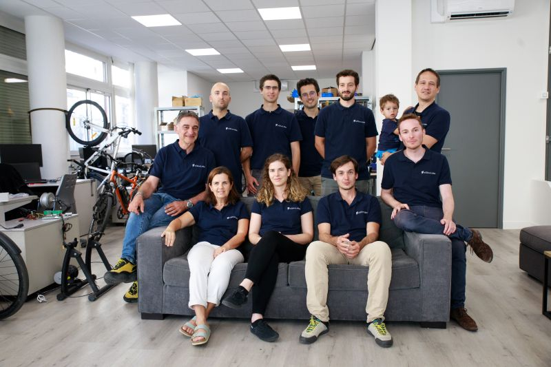
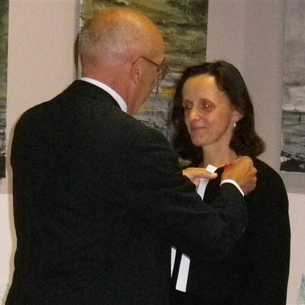

En 1981, elle entre à l'Institut national des sciences appliquées de Lyon d'où elle sort diplômée en 1984. Elle y passe ensuite un DEA. En 1988 , elle y soutient une thèse de doctorat en robotique. Entre 2000 et 2002, Elle effectue une seconde thèse dans le cadre de son habilitation à diriger des recherches à l'école normale supérieure de Lyon. De 1989 à 2001, elle est maîtresse de conférence à l'école centrale de Lyon. Elle décide ensuite de se consacrer exclusivement à la recherche et intègre l'Inria, où elle dirige l'équipe Reso.  En 2010, elle fonde son entreprise Lyatiss, ensuite rebaptisée Cloudweaver, qui développe des solutions pour les infrastructures Cloud. Elle a déposé plusieurs brevets dans le domaine de la gestion des infrastructures réseaux et de systèmes distribués. Elle a publié deux ouvrages scientifiques, une centaine d'articles dans des journaux internationaux et des conférences. En décembre 2014, elle est nommée directrice du développement produit dans le domaine de l'internet des objets à F5 Networks. Parallèlement, elle milite pour la place des femmes en sciences. Elle a notamment participé à une table ronde de la cité des sciences en octobre 2015 sur les femmes et le numérique. Elle vit dans la région de la baie de San Francisco.
Le 17 juin 2011, elle reçoit les insignes de la légion d’honneur des mains de Michel Cosnard, président directeur général de l’Inria, et en présence du maire, Dominique Bolliet.
Retour